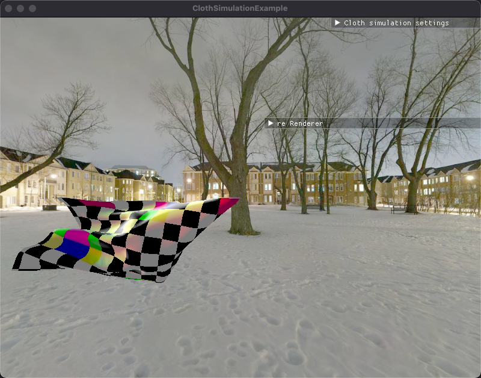
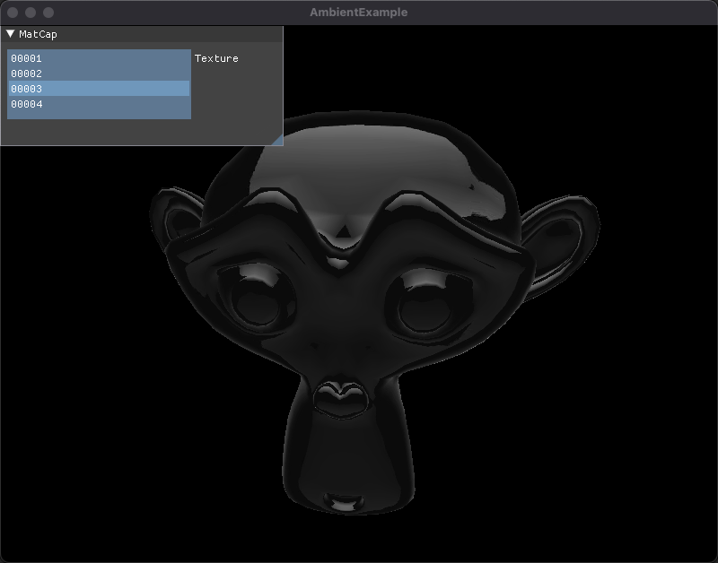
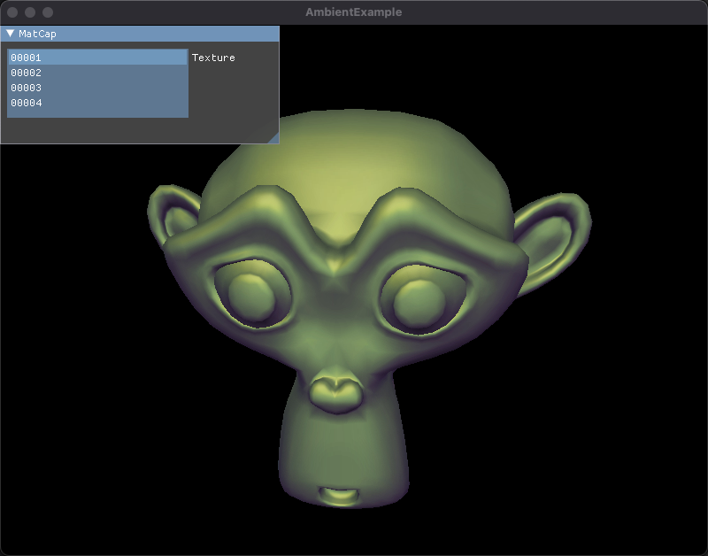
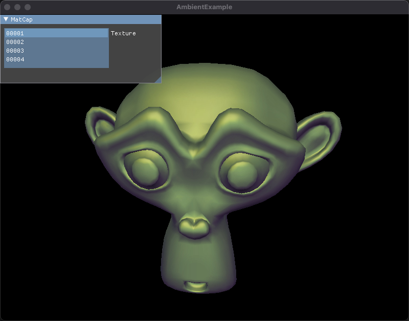

graphicRenderEngine
This is a simple render engine based on OpenGL in MAC-OS, which use C++17
render engine：ceres
Ceres :dwarf planet and largest asteroid of the main asteroid belt
representative: goddess of agriculture, representing productivity, agriculture, nature and the four seasons
dependencies
glfw:a multi-platform library for OpenGL, OpenGL ES, Vulkan, window and input.
glew:the OpenGL extension wrangler library.
glm:OpenGL mathematics library.
spdlog:fast C++ logging library.
imgui:bloat-free Graphical User interface for C++ with minimal dependencies.
stb:single-file public domain libraries for C/C++.
json11:A tiny JSON library for C++11.
lua:Lua is a powerful, efficient, lightweight, embeddable scripting language.
sol2:a C++ <-> Lua API wrapper with advanced features and top notch performance.
box2d:a 2D physics engine for games.
bullet3: real-time collision detection and multi-physics simulation for VR, games, visual effects, robotics, machine learning etc.
test demo
A visual demo of functions that can be updated in real time, which based lua script language.

A cloth Simulation Test

skybox Test:cubeMap + AmbientMap(Reflection + Refraction)

obj loader Test


ambient map Test

 

pbr Test
point sprites Test

cubemap Test

shadowmap Test

shadow volume Test

bump map Test

particleSystem Test